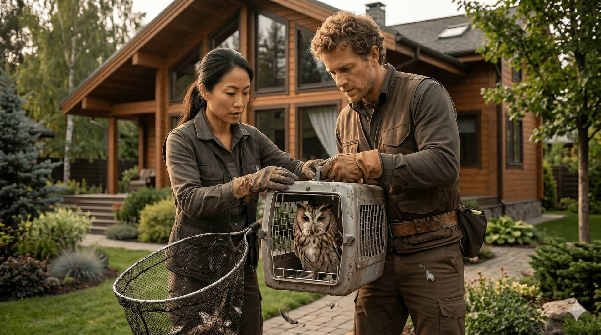

First signs
Small clues can make the next step feel unclear.
Many homeowners first notice wildlife activity through small signs: scratching sounds in the attic, droppings near exterior areas, movement near the roofline, or possible entry points around vents and soffits.